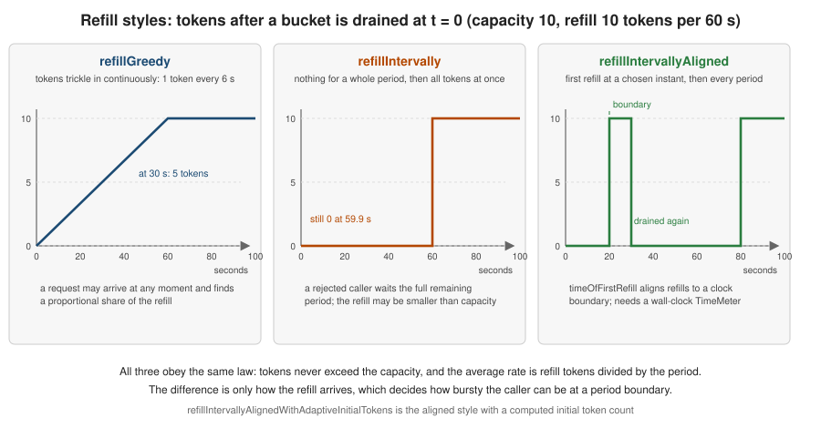
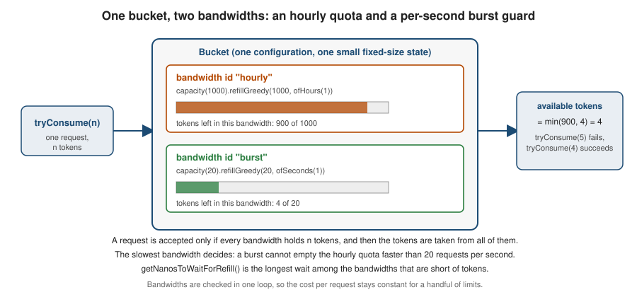

Bucket4j: Token Bucket and Bandwidths
|
This content was generated with the assistance of AI and should be verified against the official documentation before being relied on in production. |
Every Bucket4j limit is a bandwidth: a capacity and a refill. This page explains the algorithm those two numbers describe, every way to configure a bandwidth, and how to put more than one bandwidth in a bucket. It was written against Bucket4j 8.21.0, Spring Boot 4.1.x, Spring Framework 7.0.x and Java 21 and verified on 4 October 2026. All examples run unchanged on any 8.x release from 8.5.0, when the builder API was introduced.
The page builds on the overview; consuming tokens from a configured bucket is the subject of the Bucket API page.
The token-bucket algorithm
Imagine a bucket that can hold at most C tokens (its capacity). Tokens drip into it at a constant rate r, for example 20 tokens per minute. Each operation removes the tokens it costs. If enough tokens are there, the operation is allowed; if not, it is refused, or it waits until enough tokens have dripped in. The bucket never holds more than C: tokens that arrive while it is full are lost.
Between two moments t0 and t, if nothing is consumed, the number of tokens follows:
A caller that needs n tokens when only k are available (with k < n) must wait
For a bucket of 20 tokens per minute, r is one token every three seconds, so a caller that is one token short waits
three seconds. That is the value Bucket4j reports as getNanosToWaitForRefill().
The reference calls the token bucket the de-facto standard for rate limiting. Two properties explain why:
-
It allows bursts on purpose. A full bucket lets C operations through at once, then the rate drops to r. Real traffic is bursty, and refusing a client that was quiet for a minute and then sends five requests together is rarely what you want.
-
It is cheap. The state is the current token count and the time of the last refill. It does not depend on the number of requests, which is why Bucket4j buckets are small enough to keep millions of them in Redis.
Other limiter shapes
| Algorithm | How it limits | Behaviour to know about |
|---|---|---|
Fixed window |
Counts requests in each window (for example each minute) and resets the counter at the boundary |
Cheap and simple, but a client can use the whole limit at the end of one window and again at the start of the next: up
to twice the limit in a short time. The Resilience4j |
Sliding window log |
Keeps the timestamp of every request and counts those in the last window |
Exact, but memory grows with the number of requests |
Sliding window counter |
Weights the counters of the current and previous window |
Smooth and cheap, but an approximation |
Leaky bucket |
Requests enter a queue that drains at a constant rate; a full queue rejects |
Produces a perfectly even output, which suits traffic shaping, but it delays requests instead of letting bursts through |
Token bucket |
Tokens accumulate at a constant rate up to a capacity; each request spends them |
Burst up to the capacity, then the sustained rate. Bursts at the edge of a period are inherent to the algorithm; see Long periods and short bursts. |
Bucket4j implements the token bucket only. Two techniques covered below reduce its burstiness: several bandwidths in one bucket, and a smaller capacity. If you need an exact sliding window, Bucket4j is not the tool. A hand-written token bucket in a Redis Lua script is shown in Redis use cases and patterns; Bucket4j’s Redis modules do the same job through compare-and-swap and add the API, the refill styles and the other backends.
Building a bandwidth
Bandwidth.builder() is a staged builder: the compiler forces capacity first, then exactly one refill style, then
optional settings, then build(). In practice you rarely call build() yourself, because the bucket builders accept
addLimit(limit → …) and call it for you; see the Bucket API page.
| Stage and method | Meaning |
|---|---|
|
Bucket size. Must be positive. A new bucket starts with this many tokens unless |
|
Adds |
|
Adds |
|
Like |
|
Aligned refill that also computes the initial token count from how far away the first refill is |
|
Optional. Overrides the initial token count (default: the capacity) |
|
Optional. Names the bandwidth so that configuration replacement can match it; see the Bucket API page |
|
Creates the immutable |
The refill amount (tokens) is independent of the capacity. A bandwidth with capacity 100 and refillIntervally(10, ofMinutes(1))
holds up to 100 tokens but gets only 10 back every minute.
import io.github.bucket4j.Bandwidth;
import java.time.Duration;
import java.time.Instant;
// 10 tokens per minute, added one at a time as time passes
Bandwidth greedy = Bandwidth.builder().capacity(10)
.refillGreedy(10, Duration.ofMinutes(1)).build();
// 10 tokens per minute, added all at once when each minute is complete
Bandwidth intervally = Bandwidth.builder().capacity(10)
.refillIntervally(10, Duration.ofMinutes(1)).build();
// 400 tokens per hour, first refill at 17:00 sharp, then every full hour
Instant firstRefill = Instant.parse("2026-10-04T17:00:00Z");
Bandwidth aligned = Bandwidth.builder().capacity(600)
.refillIntervallyAligned(400, Duration.ofHours(1), firstRefill).build();
// same, with the initial token count computed from the time left until 17:00
Bandwidth adaptive = Bandwidth.builder().capacity(400)
.refillIntervallyAlignedWithAdaptiveInitialTokens(400, Duration.ofHours(1), firstRefill).build();Source: Bucket4j reference: Refill types and the
BandwidthBuilder source at 8.21.0.

Greedy and intervally, in numbers
A bucket with capacity 10 and refillGreedy(10, ofMinutes(1)) that has just been drained holds 5 tokens after 30
seconds and 10 after a minute. The same bucket with refillIntervally holds 0 tokens after 30 seconds, 0 after 59 seconds and
10 after exactly 60. These values were checked with a controllable clock, the technique described on
the Bucket API page.
Greedy is the right default. It spreads the quota evenly, a rejected caller only has to wait for the next token and the reported wait is short. Use intervally when the rule is literally "so many per period", for example a vendor that bills in blocks and resets its own counter every minute: a greedy refill would let you spend tokens the vendor has not yet given back.
Aligned refills
An aligned refill answers "how many requests may I make this hour", where the hour is the calendar hour, not "60
minutes after my first request". With refillIntervallyAligned(400, ofHours(1), firstRefill) and a clock reading 16:20,
the first 600 tokens (the capacity, since the initial count is the capacity) are available at once, and at 17:00 the
bandwidth receives 400 tokens, then 400 more at 18:00, and so on.
Two restrictions apply to both aligned styles. They need timeOfFirstRefill to be a non-negative instant, and the bucket needs a
wall-clock time source, because the distance to the boundary is measured against System.currentTimeMillis(). A bucket
built with withNanosecondPrecision() is rejected with an IllegalArgumentException whose message says that
the intervally aligned refill is compatible only with a wall-clock style time meter. The default local time meter is the
millisecond wall clock, so the problem only appears when you ask for nanosecond precision or a custom meter that returns
false from isWallClockBased().
Adaptive initial tokens
With a plain aligned refill a new bucket starts with its capacity (or with initialTokens), however far away the next
boundary is. A service restarted at 16:59 would therefore hand out a full hour’s quota again immediately. The adaptive
variant computes the initial count so that the quota for the current period is right:
where C is the capacity, R the refill tokens, P the refill period, tfirst the time of the first refill and tnow the current time. Bucket4j’s Javadoc works through four cases with a clock reading 16:20, first refill at 17:00 (40 of 60 minutes left), capacity 400 and a one-hour period:
| Refill tokens R | Computation | Initial tokens |
|---|---|---|
400 |
min(400, max(0, 0) + 40/60 x 400) |
266 |
300 |
min(400, 100 + 40/60 x 300) |
300 |
200 |
min(400, 200 + 40/60 x 200) |
333 |
100 |
min(400, 300 + 40/60 x 100) |
366 |
The restrictions are enforced when the bandwidth is built or used: calling initialTokens(…) on an adaptive bandwidth throws,
because the count cannot be both explicit and computed, and the adaptive style cannot be combined with withNanosecondPrecision().
Running the four cases with a clock fixed at 16:20 reproduces exactly 266, 300, 333 and 366. The 300 case looks like this:
Instant firstRefill = Instant.parse("2026-10-04T17:00:00Z"); // the clock reads 16:20
Bucket bucket = Bucket.builder()
.addLimit(limit -> limit.capacity(400)
.refillIntervallyAlignedWithAdaptiveInitialTokens(300, Duration.ofHours(1), firstRefill))
.build();
bucket.getAvailableTokens(); // 300 at 16:20 (the value changes with the wall clock)Source: Bucket4j reference: Refill types and the
BandwidthBuilder Javadoc at 8.21.0,
which holds the formula. The Javadoc examples use a Bandwidth.builder(limit → …) call that does not exist; see
the discrepancy table on migration and what’s changed.
Initial tokens and ids
A bucket starts full by default. Start it partly filled to warm a limit up, for example a new free-plan key that may make 10 calls immediately and earns the rest over time:
Bandwidth warmUp = Bandwidth.builder()
.capacity(100)
.refillGreedy(100, Duration.ofMinutes(1))
.initialTokens(10)
.id("warm-up")
.build();
Bucket bucket = Bucket.builder().addLimit(warmUp).build();
bucket.getAvailableTokens(); // 10initialTokens must not be negative; zero is legal and starts the bucket empty. The id is null by default. Set ids
only when a bucket has several bandwidths and you replace configurations on the fly: ids must then be unique within the
bucket (a duplicate is rejected with an IllegalArgumentException), and the reference suggests leaving them out otherwise
to save memory.
Time precision on the local bucket builder
How a bucket reads the clock is not a bandwidth setting. It belongs to the local bucket builder:
withMillisecondPrecision() (the default, backed by TimeMeter.SYSTEM_MILLISECONDS),
withNanosecondPrecision() (TimeMeter.SYSTEM_NANOTIME, which is not wall-clock based) and withCustomTimePrecision(TimeMeter).
Millisecond precision is enough for any limit expressed in seconds or longer. Nanosecond precision matters for very fast
refills, such as thousands of tokens per second, where a millisecond granularity makes the refill step in visible lumps.
Bucket bucket = Bucket.builder()
.withNanosecondPrecision()
.addLimit(limit -> limit.capacity(1000).refillGreedy(1000, Duration.ofSeconds(1)))
.build();Source: Bucket4j reference: Customizing time measurement, nanosecond resolution.
withNanosecondPrecision is a method of LocalBucketBuilder, not of the bandwidth builder. Custom time meters and the wall-clock flag are covered on
the Bucket API page.
Several bandwidths in one bucket
A bucket may have more than one bandwidth. A request is accepted only if every bandwidth has the tokens, and then the tokens are taken from all of them. The number of tokens the bucket reports is the smallest across its bandwidths, and the wait for a refill is the longest.

The most useful pairing is a long quota and a short burst guard, and the reference’s production checklist asks for it. Without the second bandwidth, a limit of 10,000 requests per hour allows an attacker to spend all of them in ten seconds, at about 1,000 requests per second, and then stop: the average stays far below the limit and nothing looks wrong.
Bucket bucket = Bucket.builder()
.addLimit(limit -> limit.capacity(1000).refillGreedy(1000, Duration.ofHours(1)).id("hourly"))
.addLimit(limit -> limit.capacity(20).refillGreedy(20, Duration.ofSeconds(1)).id("burst"))
.build();
bucket.tryConsume(20); // true: the burst guard allows 20 at once
bucket.tryConsume(1); // false: the burst bandwidth is empty
// getNanosToWaitForRefill() of the rejected probe is 50 ms: the next burst tokenThe Bookshelf search endpoint uses this shape for the partner plan: 2000 tokens per minute with a burst guard of 100 per second. The reference states that the number of limits configured per bucket has no impact on performance.
Long periods and short bursts
Two warnings from the reference’s generic production checklist, which apply to any token-bucket library:
Be wary of long periods. A bandwidth such as 10,000 per hour is a quota, not a protection. Pair it with a short burst bandwidth as above.
Be wary of short-timed bursts. A bucket holds at most about 40 bytes (five longs) whatever the traffic, and that efficiency has a price: the limit is guaranteed only over a long window. With a bucket of 100 tokens per minute, a client can consume 100 tokens at time T, wait one minute for the bucket to refill and consume 100 more, so 200 tokens within roughly one minute, twice the configured rate. The burst size always equals the capacity, and it cannot be avoided in a token bucket. The reference gives three ways to deal with it:
-
Do not use a token bucket if short bursts are unacceptable. It was designed for network traffic where spikes are normal.
-
Lower the capacity and the refill together. For a strict rule of "100 per 60 seconds", configure capacity 50 with a refill of 50 per 60 seconds. The costs are that a single request can no longer cost more than 50 tokens, and that the bucket under-consumes over a long time (at most 3,050 tokens an hour instead of 6,100). You trade under-consumption for the absence of over-consumption.
-
Add a second, shorter bandwidth, as above.
Technical limitations
Bucket4j uses 64-bit integer arithmetic everywhere, so every internal value is bounded by Long.MAX_VALUE. Two limits
guarantee that nothing overflows:
-
Maximum refill rate: one token per nanosecond.
refillGreedy(2, Duration.ofNanos(1))fails with anIllegalArgumentException("2 token/nanosecond is not permitted refill rate, because highest supported rate is 1 token/nanosecond"). The same holds for any rate above that, such as 1,001 tokens per 1,000 nanoseconds. Real services never get near this limit. -
Maximum refill period:
Long.MAX_VALUEnanoseconds, about 292 years. A longer period fails with anArithmeticExceptionraised byDuration.toNanos().
Other builder checks: the capacity must be positive (an IllegalArgumentException, "0 is wrong value for capacity"), the
refill tokens and the period must be positive, and the period must not be null.
Source: Bucket4j reference: Technical limitations
(maximum refill rate,
limitation on refill period). The reference example for the
second limit is written with the nonexistent Bandwidth.builder(limit → …); use the form shown on this page.
From the deprecated API to the builder
Before 8.5.0 a bandwidth was created with Bandwidth.simple or Bandwidth.classic and a Refill. These methods and the whole
Refill class are @Deprecated since 8.5.0, and the Javadoc points to the builder. They still work in 8.21.0 and are not
removed before a 9.x release. The current reference no longer shows them; you meet them in older code and older posts.
Only the source and the Javadoc carry the deprecation notice.
| Deprecated | Use instead |
|---|---|
|
|
|
|
|
|
|
|
|
|
|
|
|
|
|
|
The two forms build identical bandwidths: the test behind this page compares capacity, refill tokens, refill period and the intervally flag of both forms. The complete list of deprecations and the old-to-new mapping for the distributed side is on migration and what’s changed.
Pitfalls
| Pitfall | What happens | Fix |
|---|---|---|
Capacity and refill confused |
|
Decide separately how big a burst may be (capacity) and what the sustained rate is (refill) |
Intervally refill on an interactive API |
A rejected user waits for the whole remaining period; clients see long, unpredictable retry delays |
Use greedy, or use intervally only when the rule is literally "per period" |
Only a long bandwidth |
The quota can be exhausted in seconds, and the average hides it |
Add a short burst bandwidth |
Aligned refill with nanosecond precision |
|
Keep the default time meter, or use a wall-clock custom meter |
Initial tokens together with the adaptive style |
|
Choose one: explicit |
Refill rate above one token per nanosecond |
|
Lower the rate; limits this high are not a rate limit |
Treating deprecated |
Old code still compiles with warnings; new code written with it gets harder to migrate to 9.x |
Use the builder everywhere in new code |
What changed
-
8.5.0:
Bandwidth.builder()andaddLimit(limit → …)were introduced;Bandwidth.simple,Bandwidth.classic,withInitialTokens,withIdand theRefillclass were deprecated. -
8.6: the experimental
MathType.IEEE_754was removed; the only remaining mode is 64-bit integer arithmetic. -
8.11.1: the artifacts moved to JDK 17 and were renamed; see the artifact history on the overview.
-
8.17 to 8.21: no change to the bandwidth API; the releases changed the distributed side only.